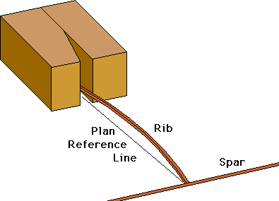

Thayer's Rib Holder
Do you have trouble getting ribs glued to spars when building light models? This is a great little tool I have made to help get the job done quickly and to combat unsteady fingers. I really don't shake, but ribs for ministicks are just so small and light that a bit of help is always much appreciated.  Construction and use should be pretty much self explanatory, but here are a few thoughts anyway. I make these out of two pieces of 1/4" thick balsa, with all surfaces sanded square using a disk sander. The groove is made by sanding a bevel onto one piece before gluing the two halves together. You can also cut a slot into a block using a scroll or band saw. Just make sure that the blade is square to the table before cutting. I prefer sanding and gluing as the gripping faces are much smoother. In use, a rib is positioned upright on my glass building board, and the holder is slid along the glass toward the rib until it is just wedged into the groove. The rib can then be positioned against the spar, and glued in place. After all the ribs are secured, the second spar is glued to the ribs. I think you will quickly find these indispensible while building indoor duration types, and others as well. Make up a few, and use them as clamps as your glue dries. Copyright 1998-2015, Thayer Syme. All rights reserved |